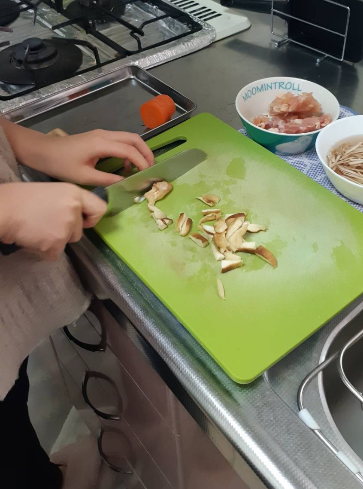
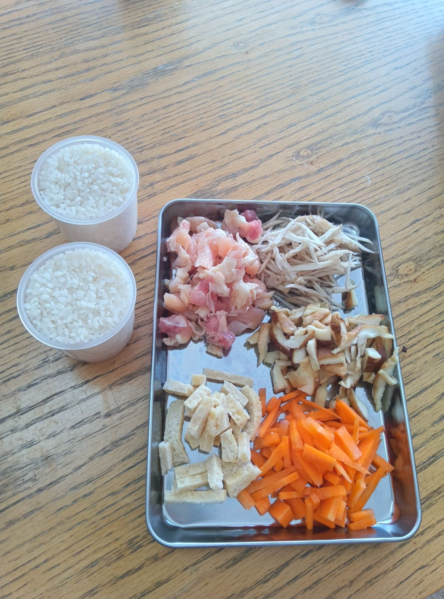
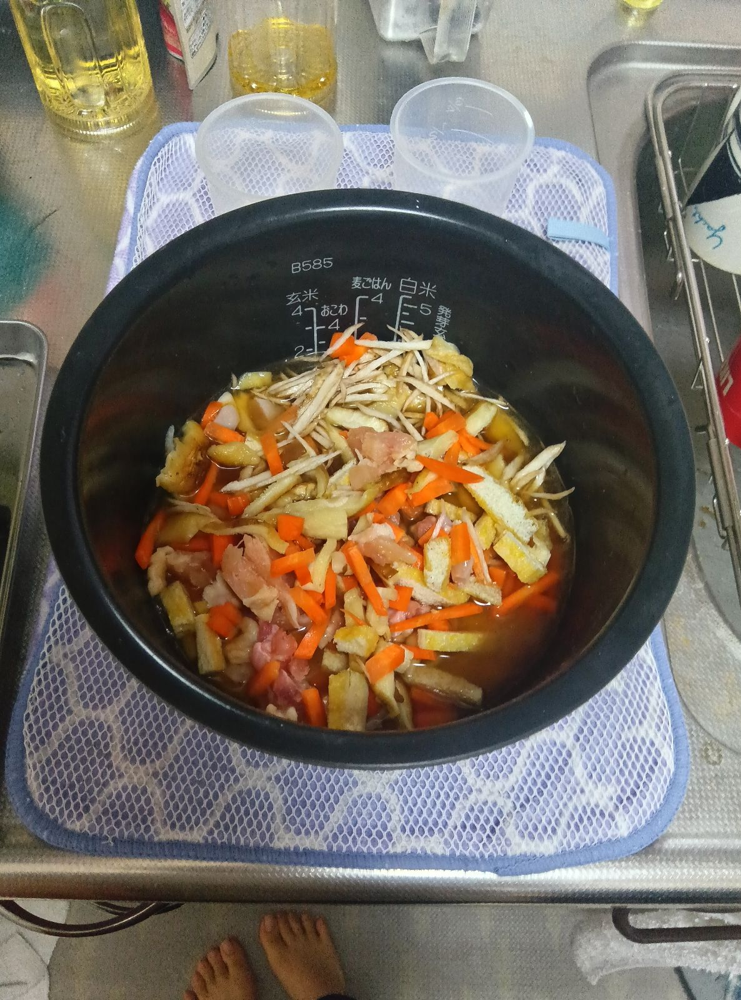
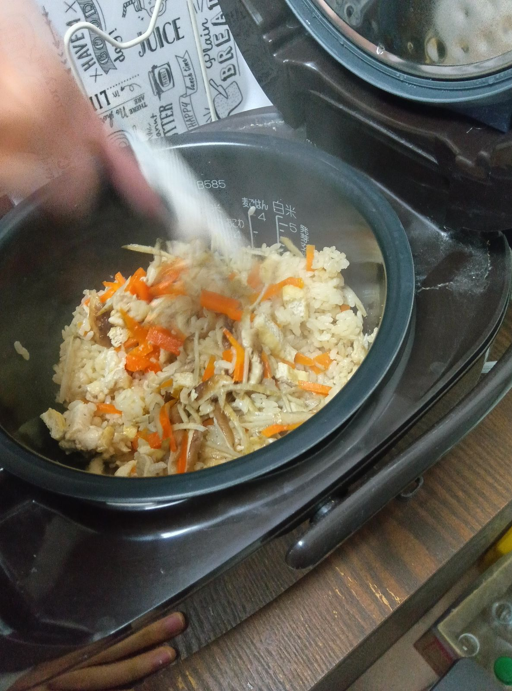
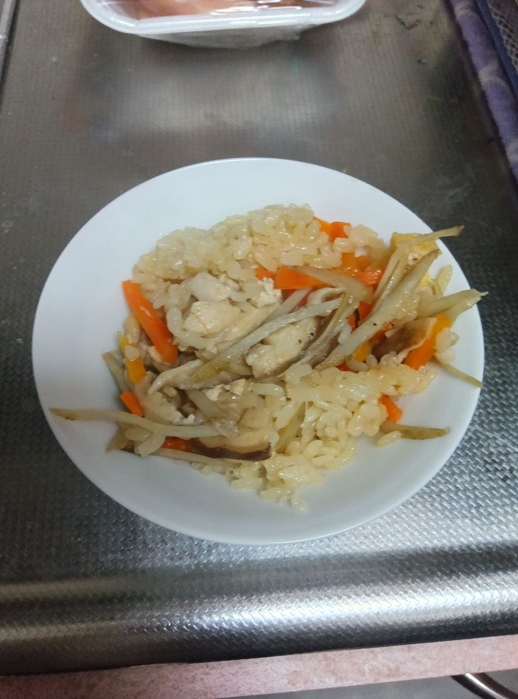

きのこ料理

しいたけを使った料理⋯なにをしよう⋯と悩んで、炊き込みご飯を作りました！
左から2番目の写真に写っているもの(ごぼう、鶏肉etc)に加え、ほんだしや醤油などを使って料理していきます。下準備はなんとお母ちゃまも手伝ってくれました。危なっかしくて見ていて怖かったそうです。おかあちゃまさまさまだぜー！
そしてすべてを炊飯器にぶち込み、ボタンをぽちっとな！します。これでもう安泰です(^q^)
炊きあがるころには、すごくいい匂いが漂ってきていました。好きです。まぜまぜして盛り付ければ(背景が台所すぎる)完成！
すげぇ簡単(お母ちゃまの偉業を忘れている)だしお手軽ですねーー！もう一回やりたいです💕